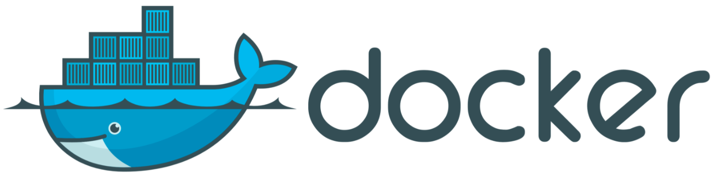

docker run -it i386/ubuntu
root@2e28398ede4b:/#
===============================================
Использование Docker в Ubuntu 18.04
Инструкция по работе с Docker Community Edition (CE) в Ubuntu 18.04
Ubuntu VPS Виртуальный сервер Софт Docker
Docker — программное обеспечение для автоматизации развёртывания и управления приложениями в среде виртуализации на уровне операционной системы. Позволяет «упаковать» приложение со всем его окружением и зависимостями в контейнер, который может быть перенесён на любую Linux-систему с поддержкой cgroups в ядре, а также предоставляет среду по управлению контейнерами.

С установкой Docker можно ознакомиться в данном руководстве.
Использование команды Docker
Команда docker позволяет использовать различные опции, команды с аргументами. Синтаксис выглядит следующим образом:
docker [option] [command] [arguments]
Для просмотра всех доступных подкоманд введите:
docker
Полный список будет выглядеть так:
attach Attach local standard input, output, and error streams to a running container
build Build an image from a Dockerfile
commit Create a new image from a container's changes
cp Copy files/folders between a container and the local filesystem
create Create a new container
diff Inspect changes to files or directories on a container's filesystem
events Get real time events from the server
exec Run a command in a running container
export Export a container's filesystem as a tar archive
history Show the history of an image
images List images
import Import the contents from a tarball to create a filesystem image
info Display system-wide information
inspect Return low-level information on Docker objects
kill Kill one or more running containers
load Load an image from a tar archive or STDIN
login Log in to a Docker registry
logout Log out from a Docker registry
logs Fetch the logs of a container
pause Pause all processes within one or more containers
port List port mappings or a specific mapping for the container
ps List containers
pull Pull an image or a repository from a registry
push Push an image or a repository to a registry
rename Rename a container
restart Restart one or more containers
rm Remove one or more containers
rmi Remove one or more images
run Run a command in a new container
save Save one or more images to a tar archive (streamed to STDOUT by default)
search Search the Docker Hub for images
start Start one or more stopped containers
stats Display a live stream of container(s) resource usage statistics
stop Stop one or more running containers
tag Create a tag TARGET_IMAGE that refers to SOURCE_IMAGE
top Display the running processes of a container
unpause Unpause all processes within one or more containers
update Update configuration of one or more containers
version Show the Docker version information
wait Block until one or more containers stop, then print their exit codes
Для просмотра опций использования определенной команды введите:
docker docker-subcommand --help
Для просмотра всей информации о Docker можно использовать команду:
docker info
Работа с образами Docker
По умолчанию Docker получает образы из хаба Docker Hub, представляющего собой реестр образов, который поддерживается компанией Docker.
Для проверки, можете ли вы осуществлять доступ и загружать образы из Docker Hub, введите следующую команду:
docker run hello-world
Корректный результат работы этой команды, который означает, что Docker работает правильно, представлен ниже:
root@kvmde67-19464:~# docker run hello-world
Unable to find image 'hello-world:latest' locally
latest: Pulling from library/hello-world
0e03bdcc26d7: Pull complete
Digest: sha256:8e3114318a995a1ee497790535e7b88365222a21771ae7e53687ad76563e8e76
Status: Downloaded newer image for hello-world:latest
Hello from Docker!
This message shows that your installation appears to be working correctly.
Изначально Docker не мог находить образ hello-world локально, поэтому загружал образ из Docker Hub, который является репозиторием по умолчанию. После загрузки образа Docker создавал из образа контейнер и запускал приложение в контейнере, отображая сообщение.
Образы, доступные в Docker Hub, можно искать с помощью команды docker и подкоманды search.
docker search ubuntu
Скрипт просматривает Docker Hub и возвращает список всех образов, имена которых подходят под заданный поиск.
root@kvmde67-19464:~# docker search ubuntu
NAME DESCRIPTION STARS OFFICIAL AUTOMATED
ubuntu Ubuntu is a Debian-based Linux operating sys… 10856 [OK]
dorowu/ubuntu-desktop-lxde-vnc Docker image to provide HTML5 VNC interface … 420 [OK]
rastasheep/ubuntu-sshd Dockerized SSH service, built on top of offi… 244 [OK]
consol/ubuntu-xfce-vnc Ubuntu container with "headless" VNC session… 216 [OK]
ubuntu-upstart Upstart is an event-based replacement for th… 107 [OK]
ansible/ubuntu14.04-ansible Ubuntu 14.04 LTS with ansible 98 [OK]
1and1internet/ubuntu-16-nginx-php-phpmyadmin-mysql-5 ubuntu-16-nginx-php-phpmyadmin-mysql-5 50 [OK]
ubuntu-debootstrap debootstrap --variant=minbase --components=m… 44 [OK]
nuagebec/ubuntu Simple always updated Ubuntu docker images w… 24 [OK]
i386/ubuntu Ubuntu is a Debian-based Linux operating sys… 19
1and1internet/ubuntu-16-apache-php-5.6 ubuntu-16-apache-php-5.6 14 [OK]
1and1internet/ubuntu-16-apache-php-7.0 ubuntu-16-apache-php-7.0 13 [OK]
eclipse/ubuntu_jdk8 Ubuntu, JDK8, Maven 3, git, curl, nmap, mc, … 12 [OK]
1and1internet/ubuntu-16-nginx-php-phpmyadmin-mariadb-10 ubuntu-16-nginx-php-phpmyadmin-mariadb-10 11 [OK]
1and1internet/ubuntu-16-nginx-php-5.6 ubuntu-16-nginx-php-5.6 8 [OK]
1and1internet/ubuntu-16-nginx-php-5.6-wordpress-4 ubuntu-16-nginx-php-5.6-wordpress-4 7 [OK]
1and1internet/ubuntu-16-apache-php-7.1 ubuntu-16-apache-php-7.1 6 [OK]
darksheer/ubuntu Base Ubuntu Image -- Updated hourly 5 [OK]
pivotaldata/ubuntu A quick freshening-up of the base Ubuntu doc… 4
1and1internet/ubuntu-16-nginx-php-7.0 ubuntu-16-nginx-php-7.0 4 [OK]
pivotaldata/ubuntu16.04-build Ubuntu 16.04 image for GPDB compilation 2
smartentry/ubuntu ubuntu with smartentry 1 [OK]
1and1internet/ubuntu-16-sshd ubuntu-16-sshd 1 [OK]
1and1internet/ubuntu-16-php-7.1 ubuntu-16-php-7.1 1 [OK]
pivotaldata/ubuntu-gpdb-dev Ubuntu images for GPDB development 1
В столбце OFFICIAL строка OK показывает, что образ построен и поддерживается компанией, которая занимается разработкой этого проекта. Когда нужный образ выбран, можно загрузить его на ваш компьютер с помощью подкоманды pull.
Например, загрузка официального образа ubuntu на свой компьютер:
docker pull ubuntu
Вы увидите подобный результат:
root@kvmde67-19464:~# docker pull ubuntu
Using default tag: latest
latest: Pulling from library/ubuntu
d51af753c3d3: Pull complete
fc878cd0a91c: Pull complete
6154df8ff988: Pull complete
fee5db0ff82f: Pull complete
Digest: sha256:747d2dbbaaee995098c9792d99bd333c6783ce56150d1b11e333bbceed5c54d7
Status: Downloaded newer image for ubuntu:latest
docker.io/library/ubuntu:latest
После загрузки образа можно запустить контейнер с загруженным образом с помощью подкоманды run.
Для просмотра загруженных образов, введите:
docker images
Вы увидите подобный результат:
root@kvmde67-19464:~# docker images
REPOSITORY TAG IMAGE ID CREATED SIZE
ubuntu latest 1d622ef86b13 10 days ago 73.9MB
hello-world latest bf756fb1ae65 4 months ago 13.3kB
Запуск контейнера Docker
Контейнер hello-world является примером контейнера, который запускается и завершает работу после вывода тестового сообщения. Контейнеры подобны виртуальным машинам, но являются менее требовательными к ресурсам.
Комбинация параметров -i и -t обеспечивает интерактивный доступ к командному процессору контейнера:
docker run -it ubuntu
Командная строка покажет что мы работаем в контейнере:
root@bb5be2ace9f4:/#
Далее можно запускать команды внутри контейнера.
apt update
Установим Node.js:
apt install nodejs
Данная команда устанавливает Node.js в контейнер из официального репозитория Ubuntu.
Проверим, что Node.js установлен:
node -v
root@bb5be2ace9f4:/# node -v
v10.19.0
Изменения, которые выполняются внутри контейнера, применяются только для этого контейнера.
Для выхода из контейнера, введите exit.
Управление контейнерами Docker
После начала использования Docker на вашей машине будет множество активных и неактивных контейнеров.
Для того чтобы просмотреть активные контейнеры введите команду:
docker ps
root@kvmde67-19464:~# docker ps
CONTAINER ID IMAGE COMMAND CREATED STATUS PORTS NAMES
Чтобы увидеть активные и неактивные контейнеры, запустите docker ps с помощью параметра -a:
docker ps -a
root@kvmde67-19464:~# docker ps -a
CONTAINER ID IMAGE COMMAND CREATED STATUS PORTS NAMES
bb5be2ace9f4 ubuntu "/bin/bash" 22 minutes ago Exited (0) 4 minutes ago adoring_williams
6d0063c3eb57 hello-world "/hello" 40 minutes ago Exited (0) 40 minutes ago flamboyant_hellman
9c961614171d hello-world "/hello" 3 hours ago Exited (0) 3 hours ago gifted_bose
Чтобы увидеть последние из созданных контейнеров, укажите параметр -l:
docker ps -l
root@kvmde67-19464:~# docker ps -l
CONTAINER ID IMAGE COMMAND CREATED STATUS PORTS NAMES
bb5be2ace9f4 ubuntu "/bin/bash" 25 minutes ago Exited (0) 6 minutes ago adoring_williams
Для запуска остановленного контейнера используем команду docker start и указываем идентификатор контейнера или его имя.
docker start bb5be2ace9f4
Теперь для просмотра его статуса можно использовать docker ps:
root@kvmde67-19464:~# docker ps
CONTAINER ID IMAGE COMMAND CREATED STATUS PORTS NAMES
bb5be2ace9f4 ubuntu "/bin/bash" 29 minutes ago Up 25 seconds adoring_williams
Для остановки запущенного контейнера используем команду docker stop и указываем идентификатор контейнера или его имя.
docker stop adoring_williams
Если контейнер больше не нужен, удаляем его командой docker rm с указанием идентификатора или имени контейнера. Чтобы найти идентификатор или имя контейнера, используйте команду docker ps -a. Затем контейнер можно удалить.
docker rm adoring_williams
Сохранение изменений в контейнере в образ Docker
При запуске контейнера из образа Docker вы можете создавать, изменять и удалять файлы, как и на виртуальной машине.
После установки Node.js в контейнере Ubuntu у вас будет работать запущенный из образа контейнер, но он будет отличаться от образа, использованного для его создания. Однако вам может потребоваться такой контейнер Node.js как основа для будущих образов.
Затем подтверждаем изменения в новом образе Docker с помощью следующей команды.
docker commit -m "What you did to the image" -a "Author Name" container_id repository/new_image_name
Параметр -m позволяет задать сообщение подтверждения, параметр -a позволяет указать автора. Идентификатор контейнера container_id — это идентификатор, который использовался ранее. Если вы не создавали дополнительных репозиториев в Docker Hub, имя репозитория (repository) обычно является вашим именем пользователя в Docker Hub.
Например, для пользователя test и идентификатора контейнера bb5be2ace9f4 команда будет выглядеть следующим образом:
docker commit -m "added Node.js" -a "test" bb5be2ace9f4 test/ubuntu-nodejs
После подтверждения (commit) образа, новый образ сохраняется локально на вашем компьютере.
Если просмотреть список образов Docker, в нем окажутся и новый образ, и исходный образ, на котором он был основан:
docker images
Вы увидите подобный результат:
root@kvmde67-19464:~# docker images
REPOSITORY TAG IMAGE ID CREATED SIZE
test/ubuntu-nodejs latest 008c1c057944 51 seconds ago 162MB
ubuntu latest 1d622ef86b13 10 days ago 73.9MB
hello-world latest bf756fb1ae65 4 months ago 13.3kB
В данном примере ubuntu-nodejs — это новый образ, созданный на основе существующего образа ubuntu из Docker Hub.